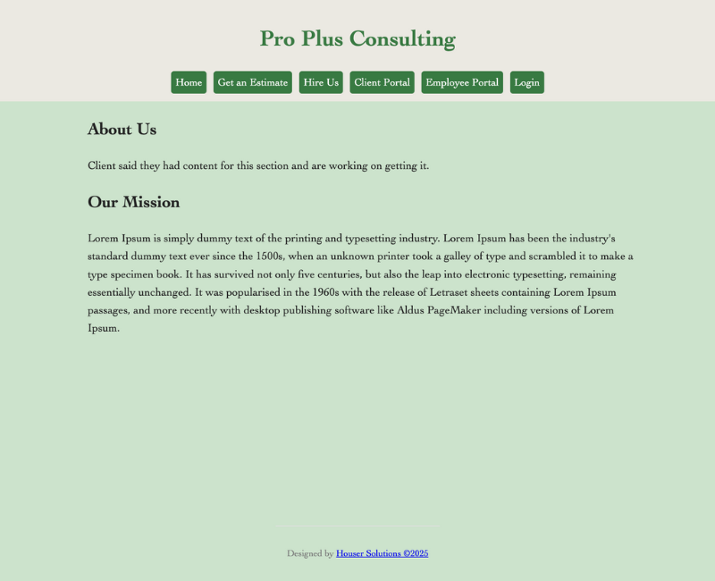

Peer Review Evaluation One
Pro Plus Consulting - Zeke Houser
Design
- Contrast: The contrast in the website is good, it is easy on the eyes and visually pleasing. The colors help it easy to understand what is a heading and what are body/main elements. The nav bar also presents a good contrast with the page.
- Repetition: The repetition in the site allows for an easy visual cues to understand what part of the website you are on. Both portals present the same type of styling which could be a bit confusing for a new user. The forms presented in the website are consistent and allow for any easy to use experience which is appreciated as a new user.
- Alignment: The alignment in the website allows for an easy to use nav bar and form submission. There is a clear structure in the design of the website that shows professionalism.
- Proximity Everything in the website has a clear structure which creates a sense of proximity. Everything that is together feels and looks like it belongs together. The only potential issue that can be seen is that there is a huge amount of unused real estate, which leaves a feeling of something is missing. Increasing the zoom using chrome to 150 makes the website look and feel much more full.
Elements
- Basic Page Elements: The page includes basic web elements such as header, main, footer, and a nav bar. The website also contains the company name in it's h1 and header. The main starts with the name of page. The branding and name is consistent throughout the page. Footer includes validation links and user design company.
Assignment Requirements
- Assignment specific requirements: All of the requirements are meet for this page and the project assignment requirements.
Final notes
- Conclusion: The website looks great overall. There doesn't seem to be anything wrong with the website visually. Everything is fulfilled according to the assignment and the course checklist. The only major issue are the ones that the validator is saying. The main issues seem to be simple styling warnings and easy js/html fixes. Using the WCAG there just simple to be a simple contrast error which is an easy fix. Overall great website!